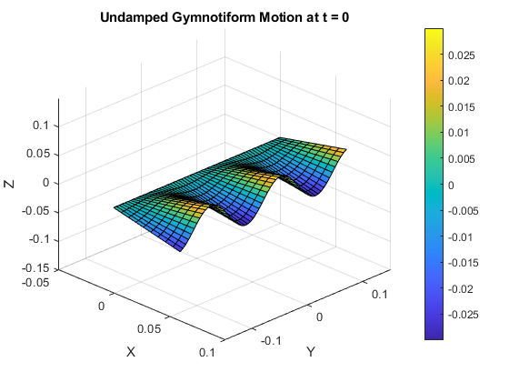

clear all; clc; clf;
body_length = 0.3;
fin_length = 0.06;
undamped_amplitude = 0.03 / fin_length;
alpha = 3;
k = 50;
density = 997;
forward_speed = 0.1;
momentum_factor = 2.4;
angular_frequency = 10;
angular_amplitude = atan(undamped_amplitude * fin_length / fin_length);
angular_velocity = angular_amplitude * angular_frequency;
momentum_per_length = pi * density * angular_velocity * fin_length ^ 3 / 8;
wavelength = 2 * pi / k;
local_twist = 2 * pi * angular_amplitude / wavelength;
propagation_velocity = angular_velocity / local_twist;
inclination_angle = atan(undamped_amplitude * fin_length * k * cos(-2 * pi * alpha));
force = 0.5 * forward_speed * momentum_factor * momentum_per_length * (1 - forward_speed / propagation_velocity) * sin(inclination_angle);
x = linspace(0, fin_length, 10);
y = linspace(body_length / -2, body_length / 2, 60);
[X, Y] = meshgrid(x, y);
t_values = linspace(0, 0, 10);
figure (1);
for t = t_values
Z = undamped_amplitude .* sin(-2 * pi * alpha * t + k * Y) .* X;
surf(X, Y, Z);
xlabel('X');
ylabel('Y');
zlabel('Z');
title(['Undamped Gymnotiform Motion at t = ', num2str(t)]);
colorbar;
view(45, 30);
xlim([-0.05 0.1])
ylim([body_length / -2 body_length / 2])
zlim([body_length / -2 body_length / 2])
pause(0.1);
end
